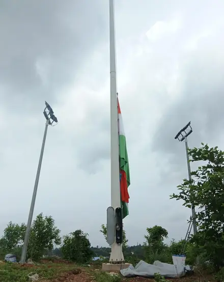
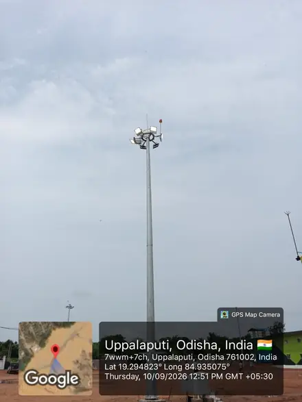
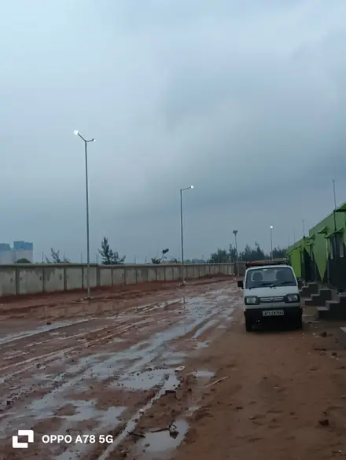
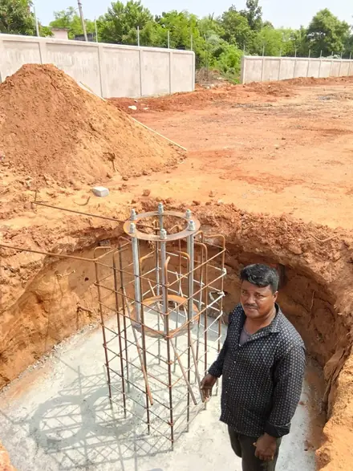
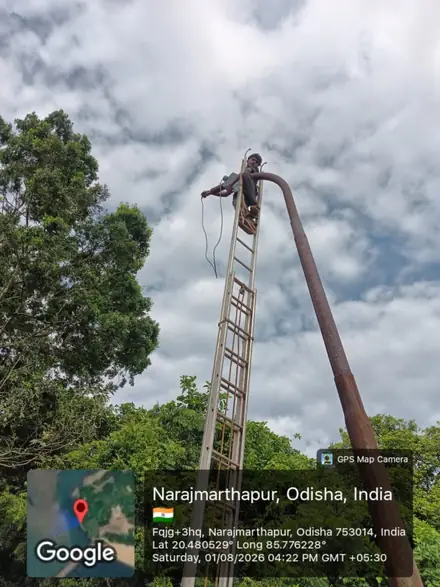
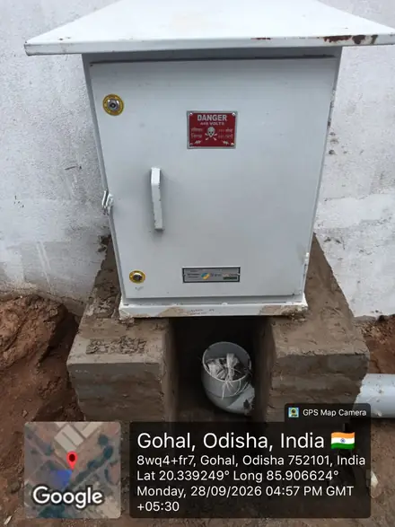

Tap a project to see all its site photos.

13 photosBachhara Park, Jatani, Khordha, Odisha 752050
Civil foundation and installation of a 16.0 mtr flag mast and 5.0 mtr octagonal poles for the Forest Department.

7 photosUppalaputi, Odisha
Crane erection and floodlight commissioning of the 12.5 mtr high mast.

10 photosUppalaputi, Odisha
Pole staging, wiring, erection and energising of the street light poles with cable trenching.

36 photosDaspala Rly Station, Nayagarh, Odisha
Excavation, rebar cage and anchor bolt fixing, shuttering and concreting of the 20.0 mtr high mast foundation.

11 photosNaraj Barrage, Narajmarthapur, Odisha 754006
Lamp-head repair, cable replacement and pole junction box changeover.

1 photosNakhara, Odisha
Street light installation for the Colourtune Garment premises at Nakhara.